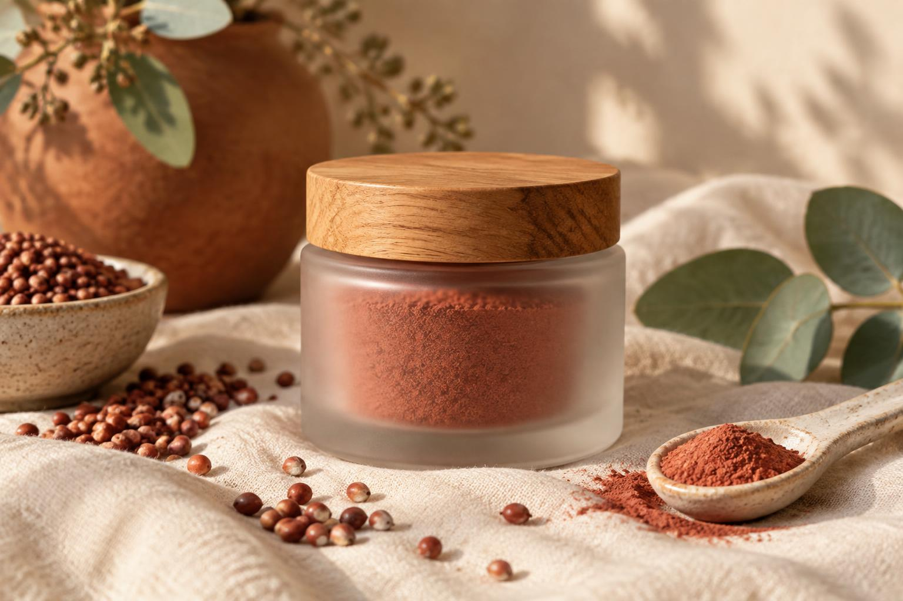
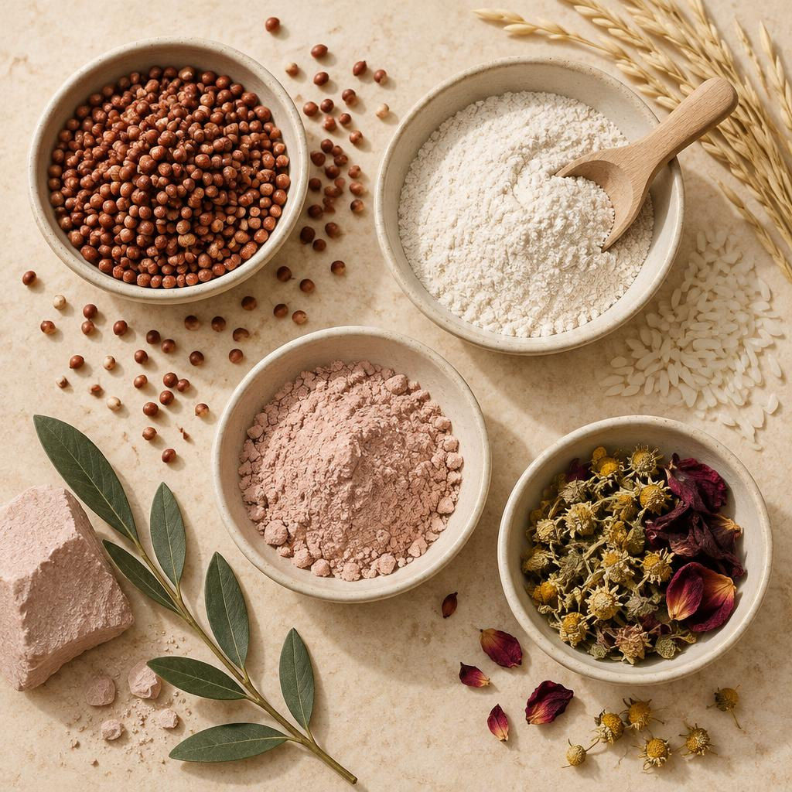

Red Sorghum Powder Cleanser & Mask
Cleanser & mask 2-in-1 dari ekstrak red sorghum. Satu jar untuk dua ritual: exfoliasi lembut setiap hari, dan mask menyegarkan saat kulit butuh lebih. Kulit cerah, halus, dan sehat — tanpa rasa tertarik.

About the Product
Satu jar serbuk, dua ritual skincare.
Aureá Botanicals Red Sorghum Powder Cleanser & Mask adalah powder cleanser 2-in-1 dari ekstrak red sorghum asli Indonesia. Berbeda dari cleanser cair yang umumnya mengandung air dan preservative, formula serbuk ini 100% aktif — tinggal campur dengan sedikit air, dan kamu dapat cleanser yang lembut atau masker penuh nutrisi sesuai kebutuhan.
Partikel halusnya membantu angkat sel kulit mati dan kotoran tanpa membuat kulit kaku, sementara antioksidan alami dari red sorghum membantu kulit terlihat lebih cerah dan merata.
- Cleanser harian yang lembut — cocok untuk semua jenis kulit
- Mask mingguan untuk brightening & kontrol minyak
- Tanpa air berarti tanpa preservative — hanya yang aktif
- Dapat diaktifkan dengan air, honey, atau yogurt
2-in-1
Cleanser & Mask
60 g
Isi bersih
0
Preservative
100%
Bahan natural
Ingredients Overview
Kenali bahan-bahan utamanya.

Hero ingredient — antioxidant
Red Sorghum Extract
Kaya anthocyanin & antioksidan alami. Membantu kulit tampak lebih cerah, merata, dan terlindungi dari stres lingkungan.
Gentle exfoliant
Rice Powder
Eksfoliator fisik lembut dari beras. Mengangkat sel kulit mati dan membuat tekstur kulit lebih halus.
Oil absorber
Kaolin Clay
Clay yang lembut menyerap kelebihan minyak dan menghasilkan kulit matte yang sehat, tanpa rasa tertarik.
Soothing botanicals
Chamomile & Rose Petals
Botanikal menenangkan yang membantu meredakan kemerahan dan memberi pengalaman spa di rumah.
Ingredients Explained
Apa yang sebenarnya masuk ke kulitmu?
Kami transparan soal setiap bahan. Ini penjelasan lengkapnya — nama INCI, fungsinya, dan alasan kenapa ada di formula.
Red Sorghum
Sorghum Bicolor Seed Powder
+
Red Sorghum
Sorghum Bicolor Seed Powder
INCI: Sorghum Bicolor Seed Powder. Bintang utama formula ini. Red sorghum mengandung anthocyanin — pigmen merah alami yang juga antioksidan kuat. Membantu melindungi kulit dari radikal bebas, menenangkan iritasi ringan, dan mendukung tampilan kulit lebih cerah & merata secara bertahap. Teksturnya yang halus juga berperan sebagai eksfoliator paling lembut di formula ini.
Rice Powder
Oryza Sativa Powder
+
Rice Powder
Oryza Sativa Powder
INCI: Oryza Sativa (Rice) Powder. Eksfoliator klasik dari Asia yang sudah dipakai berabad-abad. Partikel beras yang digiling halus mengangkat sel kulit mati dan kotoran di permukaan tanpa menggesek kulit secara kasar. Hasilnya: tekstur lebih halus dan penyerapan skincare selanjutnya lebih optimal.
Kaolin Clay
Kaolin
+
Kaolin Clay
Kaolin
INCI: Kaolin. Clay paling lembut di keluarga clay. Menyerap kelebihan sebum dan kotoran dari pori, membantu T-zone tetap matte lebih lama, dan tidak menyedot kelembapan alami kulit seperti clay yang lebih agresif.
Chamomile & Rose Petals
Chamomilla Recutita & Rosa Damascena Flower Powder
+
Chamomile & Rose Petals
Chamomilla Recutita & Rosa Damascena Flower Powder
INCI: Chamomilla Recutita (Matricaria) Flower Powder, Rosa Damascena Flower Powder. Duo botanikal penenangkan. Chamomile dikenal meredakan kemerahan dan iritasi ringan, sedangkan rose petals memberi aroma natural yang lembut serta antioksidan tambahan. Keduanya membuat sesi mask terasa seperti ritual spa, bukan sekadar rutinitas.
Catatan: daftar ini menampilkan bahan-bahan utama. Untuk daftar lengkap & terbaru, selalu cek label kemasan produk.
How to Use
Cara pakainya gampang banget.
01
Tuang
Masukkan 1 sendok teh powder ke mangkuk kecil atau telapak tangan. Secukupnya saja — satu jar bisa bertahan lama.
02
Aktifkan
Tambahkan beberapa tetes air (atau honey/yogurt — lihat DIY Recipes) sambil diaduk sampai jadi paste lembut.
03
Pilih ritualmu
Sebagai cleanser: massage 30 detik lalu bilas. Sebagai mask: biarkan 10–15 menit, lalu bilas dengan air hangat.
Beli Produk
Ready to glow? Mulai ritualmu sekarang.
Red Sorghum Powder Cleanser & Mask tersedia di official store kami di Shopee & Tokopedia. Klik tombol di bawah untuk langsung ke tokonya.
Fresh setiap pakai — tanpa preservative
Gratis eksperimen DIY di rumah
Pakai pagi atau malam, 2–3x seminggu untuk mask
Dikemas dengan bahan daur ulang
Testimoni
Kata pengguna setianya.
"Awalnya skeptis soal powder cleanser, tapi ini beda. Kulitku rasanya bersih tapi nggak keras sama sekali. Sekarang maskernya jadi ritual weekend aku!"
Sarah P.
Kulit kombinasi
"Eksfoliasinya lembut banget dan nggak bikin kemerahan. Wajahku terasa lebih halus setelah dua minggu, dan saya suka aroma naturalnya."
Amanda R.
Kulit sensitif
"T-zone saya yang biasanya shiny siang-siang sekarang lebih terkontrol. Dan satu jar itu awet banget — worth it."
Keisha A.
Kulit berminyak